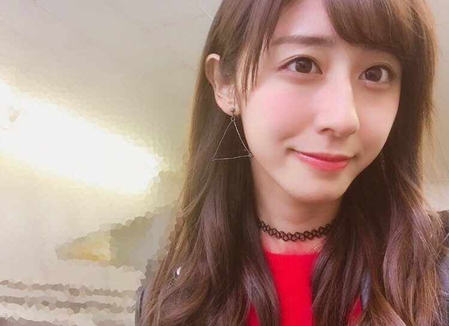
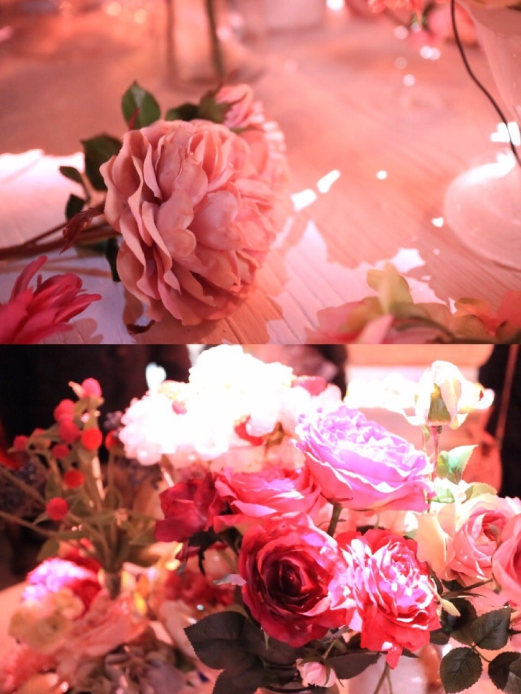
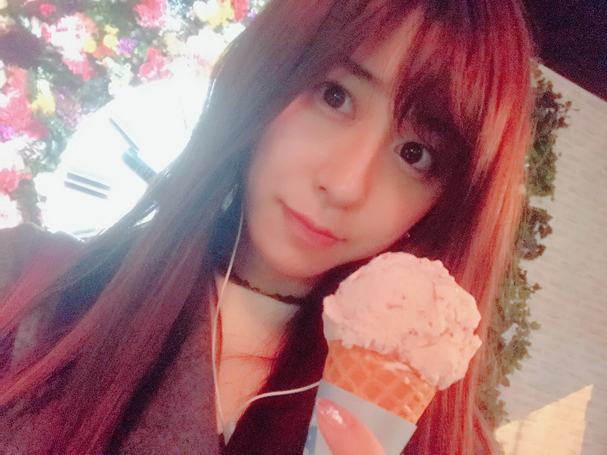

| 2016/12 22 Thu | 素敵な空間。 |
ちはるーむへようこそ。
今日で今年の授業が終わり
明日から冬休みに入ります\( ˆ ˆ )/
今年も無事授業終了！
あとは1月のテストを待つのみです。
全国の学生の皆さんも
多分今日辺りに終業式ですかね？
一年間学校お疲れ様です☺︎
そうしてもう、
今年もあっという間に終わってしまう。
友達に良いお年を〜って言うのが
例年よりも早い気がします。
毎年毎年早くなって行くのが
少し寂しい気もします...
これも成長したということなのかな。
来年からもこれからも毎日大切に
過ごしていきたいと思います！
皆さんも時間は大切に◎
有意義な時間を一緒に過ごしましょう！

-------------------------------♡
そういえば少し前に
表参道ヒルズで行なっている
デジタルスイーツアート展
「Sweets by NAKED」に行ってきました！
大好きなスイーツ、
夢の国のような私の大好きな世界観、
そしてプロジェクションマッピングが
本当に素敵で感動しましたヽ(；；)丿
一人で行って来たんだけど
おぉ〜とか綺麗！とかたまに呟いて
完全にヤバいやつでしたが。笑
本当に幸せな空間だった...
チョコレートもアイスクリームも
美味しくてにやけてた...
#chihashot

入り口の看板とミニツリー。

アイス屋さんの机に飾ってあった
ピンクで可愛いお花たち。

ライトアップされていて
可愛いキャンディが沢山あるワゴンと
これもアイス屋さんのテーブルのブーケ。
我ながらよく撮れた気がする！
と少し嬉しくなりました( ¨̮ )
カメラの扱いにも前よりは慣れてきた〜♪
知れば知るほどカメラの良さと
写真を撮る楽しさを知ります。

アイスは BEN&JERRY'S！
濃厚で大きくて美味しかった〜
お腹いっぱいになったよ〜
趣味の時間は本当に楽しい！
友達と一緒にいるのも大好きだけど
ひとりの時間も同じくらい大切◎
来年はもう少し遠いところに
このカメラと一緒に行きたいな。
カメラ一つだけ持って、
ひとり旅する事が夢。
2017年、行けますように...！
-------------------------------♡
♬ ChihaMusic
「雪の音」GReeeeNさん
冬といえばこの曲も聴きたくなる。
曲調にクリスマス感もあって
冬の寒いけどワクワクする感じが
聞いていて楽しい気持ちになれる。
"この街に雪が舞い降りて
あなたの温もりが暖かくて
触れた手を溶かさずに
このままずっと"
素敵。。
雪が降って寒いからこそ
あなたの手はいつもよりも暖かく感じて
その手はだけは離したくないような、
健気な気持ちがぐっときます。
告知するの忘れていました...
今朝のまいちゅんのANNに
少しだけお邪魔しました◎
モーニングゼミナールで
好きなスポーツランキングを発表しました！！
1位 アメリカンフットボール
2位 サッカー
3位 バスケットボール
理由はラジオを聞いた方だけに(﹡ˆ ˆ﹡)
今回は事前録音だったので
いつかスタジオに行って生放送にでたいな〜
まいちゃんと一緒に沢山喋りたい◎
おやすみ〜
斎藤ちはる
コメント(218)
2016/12/22 23:59